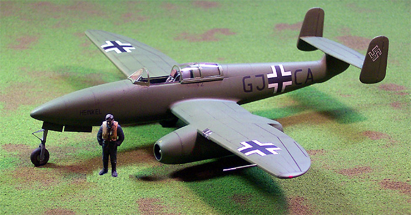
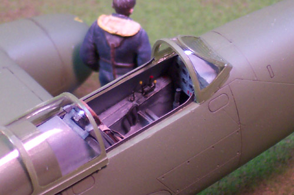
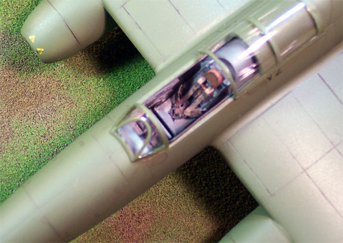
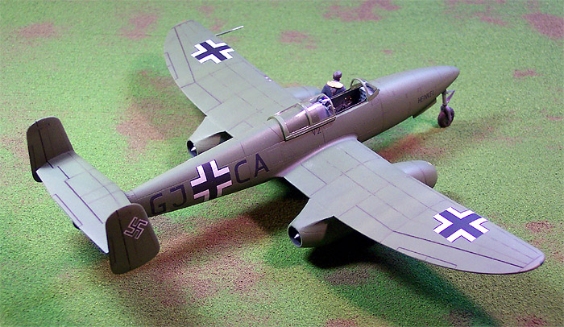
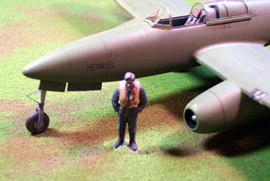
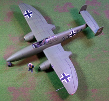

{kind=link}
{kind=link}


Eduard 1/48 Heinkel He-280 Hi-Tech (ProfiPack)

Kit #8049 MSRP $39.98 USD
Images, text and Model Copyright � 2004 by Matt Swan
Developmental History
Designed by Robert Lusser in 1939, the world's first jet powered production fighter, the He-280 was unique in many ways. Contrary to what most people may think, the Me-262 was not the world's first jet fighter. Neither was the British Meteor, Heinkel led the way with the 172 testbed and 280 prototypes.

The He-280 is a remarkable aircraft claiming many �firsts� in history. It was the first jet combat aircraft, the first twinjet aircraft and the first jet aircraft to go beyond prototype stage. It was fitted with the world's first ejection seat and first to have one used! On January 31st, 1943 Fritz Schafer catapulted from the He-280 V1 when it went out of control due to heavy icing, he landed uninjured but the aircraft was lost.
Following the successful test programs of their He-172 V1 and V2 prototypes - the first successful jet powered aircraft - Heinkel started working on a jet fighter that would result in the He-280. When demonstrated to the Luftwaffe, it roundly trounced an Fw-190. It out flew and outmaneuvered the best fighter of the time. Unfortunately Heinkel was not a manufacturer in favor with the upper leadership of Nazi Germany, so what could have been a devastatingly effective jet fighter coming into service well before the Allies had achieved air superiority was relegated to the role of test aircraft. Had the Heinkel He-280 gone into service, it would have been a rude shock to the Allied pilots fighting over Europe. It would have been armed with three 20-mm cannons, and would have been powered either by the Jumo 004 or Heinkel's own turbojet design, the HE-S series.
The He-280 had it's first flight without the jet engines on the September 22nd, 1940 and first flew under jet power on April 2, 1941 and eventually nine of these beautiful aircraft were built (but only 3 were powered) out of an order from the RLM for 20 aircraft. With its speed advantage and good armament it most probably would have been the best dogfighter of World War 2, especially in hit-and-run tactics. The HeS08 and BMW109-003 engines had better handling and provided better acceleration than the Jumo109-004 and it was also tested with the Argus pulsejet engines, made famous by the V-1 flying bombs.

The Kit
This package includes not only the basic trees of injection molded pieces but a selection of PE items, resin interior pieces, a white metal nose weight and painting masks for the canopy and wheels. First we have three trees of plastic pieces done in a light gray good quality plastic. The parts (90 of them) have finely engraved panel lines and deeper engravings for the control surfaces. The panel lines are so fine that they are easily sanded out so care must be exercised. Fortunately the parts fit together very well so little to no filler will be needed, hence very little sanding. There is one small tree of clear parts that includes a closed canopy, a two-piece open canopy and a nicely molded landing light for the wing leading edge. There are only four resin pieces; the ejection seat and the wheels, which are bulged and flattened. We have a sheet of 19 photo-etched parts that include seat belts, oleo scissors, dashboard, canopy tracks and various other small details. There is a nice little acetate sheet of instrument faces to go behind the PE dash and lastly, we have the masks and nose weight. Quite a bit of stuff packed into this package, 119 pieces overall.
Out of those ninety plastic pieces not all of them will be used in the construction process, you will most likely want to discard the injection molded wheels in favor of the resin set and you need to choose an engine style for the particular aircraft you will be modeling. You have a choice of the Jumo 004 engines or the HeS 8a engines. As I mentioned before, the overall parts fit is very good but you should use some tissue packing or glue on that nose weight. I did not and I get just the slightest rattle from the front end when handling the model.
Decals and Instructions

Decals are provided to model three different aircraft; V-2 powered by the Jumo 004 engine, V-8 powered by the HeS 8a engine, and the V-3. The only difference in the markings is the call letters for the aircraft so the sheet is not overly large. There are no maintenance or service stencils included with the decals. Color density is good, the decals are nice and thin and settle down with just a touch of setting solution.
The instruction sheet is a large four panel fold-out. It includes a short paragraph covering the history of the aircraft that is repeated in four languages. There is a complete, numbered diagram of all the various parts and a very brief color chart which cross references Tamiya, Humbrol, Revell, Testors and Aeromaster paint codes. Unfortunately they only cross reference five colors. You get four pages of assembly instructions that are clearly done and include some color call-outs. It is up to the modeler to select detail colors for many of the finer pieces such as levers and switches in the cockpit. Finally there are two pages of exterior painting and decal placement instructions. There is one additional sheet of instructions in the package and that is a small sheet covering the use and placement of the mask set.
My model is finished with Testors Olive Drab enamel, panel lines are accented with a sludge wash over Future and the finish coat is Polly Scale Clear Flat acrylic. There was no putty or filler used during the construction of this kit.
Conclusions
This is a beautiful aircraft and the model accurately captures the graceful lines of the bird and is well engineered for detail and fit. Due to it�s historical significance it�s hard to imagine any collection not having one of these included. There is not much of anything available in aftermarket material for this model however the Jumo 004 engine from Aires intended for the 262 series of aircraft could be adapted to this. It would be nice if someone would produce a scale model of the HeS 8a engine to hang under the wings especially considering there prominent pictures of this aircraft in flight using these engines with the covers removed. And lastly, I have seen one of these converted by a modeler into a �what-if� armed fighter � that is something I have wanted to model ever since seeing it.


You can click on the pictures above to see larger images.